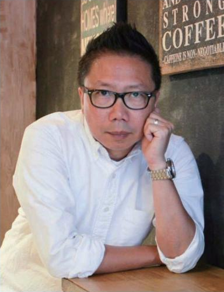

跨地域项目经验
John 参与的项目遍及北京、上海、香港、东京、大阪、首尔、纽约、伦敦及瑞典，积累了不同地域及场景的创作与设计经验。
MATRIX CREATIVE LIMITED
设计 · 制作 · 安装 · 维护
Matrix Creative 由资深主题景点设计师、舞台布景师及多媒体策划人刘家鸿（John Lau）创立。团队汇聚了国际化的艺术家、策展人、空间设计师、创意编程师、工程师及工厂质检与现场安全专家。
我们遵循「让新媒体与空间艺术融入生活」的理念，打破传统设计与工程落地的界限。跨足主题公园、商业主题空间、公共交通枢纽艺术品、沉浸式数码展览及潮玩 IP 制作等多元领域，团队的项目足迹遍及北京、上海、香港、东京、大坂、首尔、纽约及伦敦等国际都市。我们不仅创造视觉焦点，更致力于提供从概念研发、生产制作到后期维护的全生命周期解决方案。
将研发（R&D）融入生产制造的每一个细节。
创办人

舞台布景设计 · 电视广告美术 · 多媒体创作
刘家鸿 John Lau 是 Matrix Creative 创办人，也是资深舞台布景设计师、电视广告美术指导、多媒体创作人，以及国际性主题景点设计与艺术项目策划人。
自 2013 年起，他从事国际主题公园及景点设计工程、主题商业空间设计、高级品牌橱窗设计，以及多媒体艺术创作与策划监督。这些工作涵盖不同主题、场景及展示形式。
近年，他也拓展了结合主题设计与艺术的跨界空间项目，以及沉浸式数字内容创作与展览策展工作。
浏览项目John 参与的项目遍及北京、上海、香港、东京、大阪、首尔、纽约、伦敦及瑞典，积累了不同地域及场景的创作与设计经验。
John 过往服务的客户包括香港铁路有限公司（MTR）、H&M、Calvin Klein、Pandora、香港迪士尼乐园、北京环球影城及 Shiseido 等。
公司及创办团队历年合作的机构、品牌与项目场地。